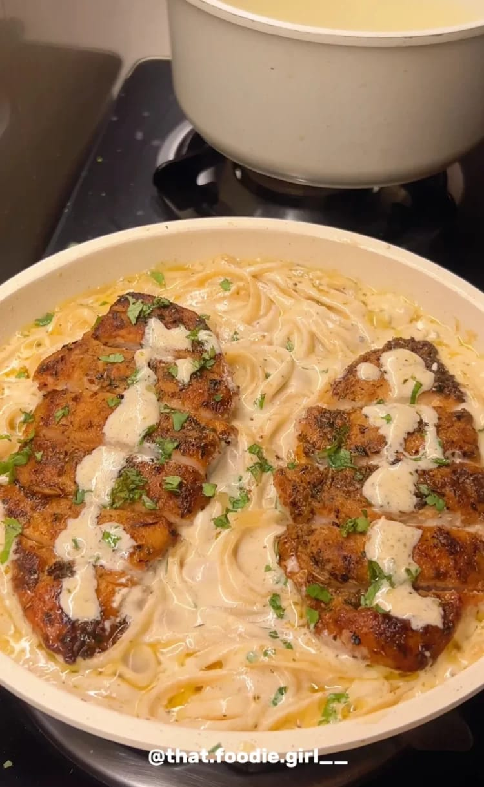

Afredo-pasta

Description:
This recipe keeps all the creamy goodness you expect but takes it up a notch with juicy, well-seasoned chicken that adds so much flavor. It’s my go-to when I want something that feels a little fancy but is still easy enough to pull off on a weeknight. If you’re craving a pasta night that feels straight from a restaurant but made in your own kitchen, this one’s for you.
Ingredients:
For the chicken:
- 1 lb. chicken breast (2 large pieces, halved horizontally)
- 1 tbsp olive oil
- ½ tbsp butter (for cooking the chicken)
- 2 tsp Italian seasoning
- 1 tsp lemon pepper
- 1 tsp smoked paprika
- 1 tsp garlic powder
- 1 tsp dried oregano
- 1 tsp salt
- ½ tsp dried basil
- ¼ tsp black pepper
For the sauce and pasta:
- 1 lb. fettuccine pasta
- 6 tbsp unsalted butter
- 1 tbsp freshly minced garlic
- Salt and black pepper to taste
- 1 ½ tsp Italian seasoning
- ½ cup reserved pasta water
- 1 cup freshly grated Parmesan cheese
- 4 tbsp cream cheese
- 1 cup unsweetened heavy whipping cream
- 1 tbsp fresh parsley (for garnish)
Instructions:
-
Start by butterflying the chicken breast (cut it horizontally into two thinner pieces). This helps it cook faster and stay juicy. Season the chicken generously with salt, black pepper, smoked paprika, garlic powder, lemon pepper, basil, oregano, and Italian seasoning. Let it rest while you prep the pan or leave it in the fridge for 15 minutes if you have time.
-
In a large skillet or pan, heat the ½ tablespoon of butter with 1 tablespoon of olive oil over medium-high heat.Once hot, add the chicken. Cook for about 6–7 minutes per side, or until golden brown and cooked through. For extra color, raise the heat briefly toward the end to develop a light char, but watch closely so it doesn’t burn. Remove the chicken and let it rest for 5 minutes before slicing to preserve its juices.
-
In a clean pan (or the same one, I used a clean pan to make it identical to Olive Garden’s), melt 6 tablespoons of butter over medium heat. Add minced garlic and sauté for 30 seconds until fragrant, be careful not to burn it. Add heavy whipping cream, cream cheese, and Parmesan cheese. Stir until smooth and creamy. Season with salt, pepper, and Italian seasoning to taste.
-
Pour in the reserved pasta water gradually to loosen and emulsify the sauce. Stir well until the sauce becomes glossy and smooth. Let it simmer for about 2–3 minutes to blend the flavors. If the sauce thickens too much, add a little more pasta water.
-
While the sauce is simmering, cook the pasta in a pot of salted water according to package directions. Reserve ½ cup of the pasta water before draining. Add the cooked fettuccine to the pan with the sauce and toss until the pasta is fully coated. Add additional Parmesan to taste and stir to melt it into the sauce.
-
Slice the rested chicken into thin strips or bite-sized pieces. Place the chicken on top of the pasta or stir it back into the pan with the sauce, depending on your presentation preference.
-
Sprinkle with chopped fresh parsley for color and freshness. Serve hot and enjoy the creamy, savory goodness!
Go to back to home-page